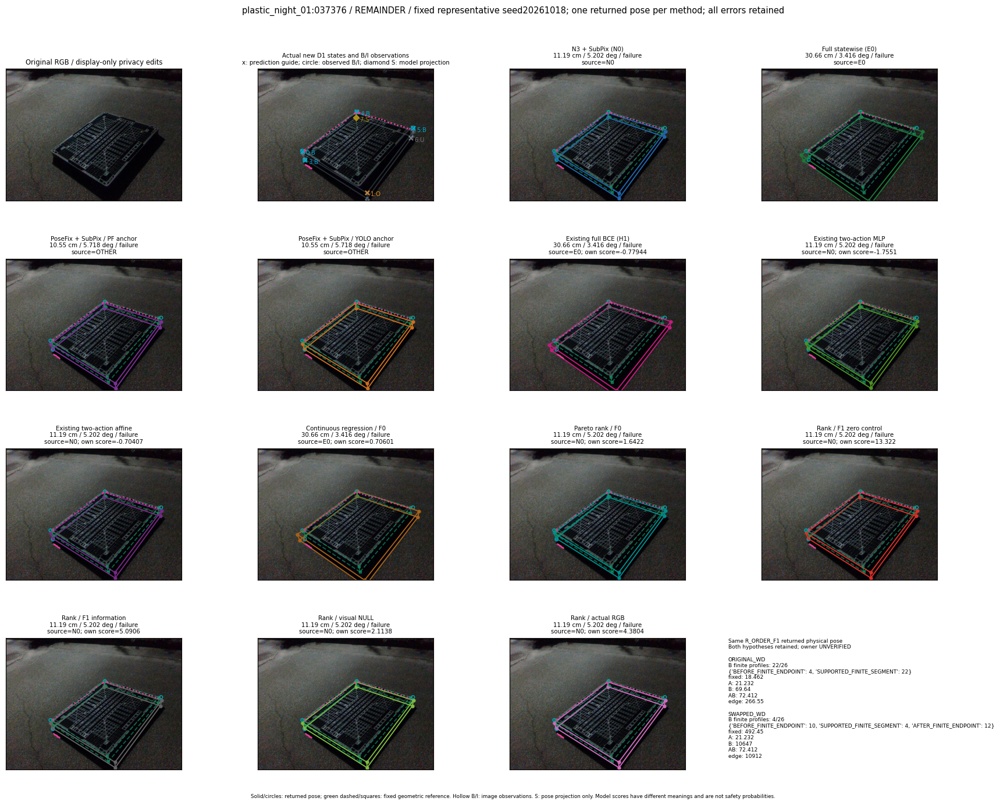
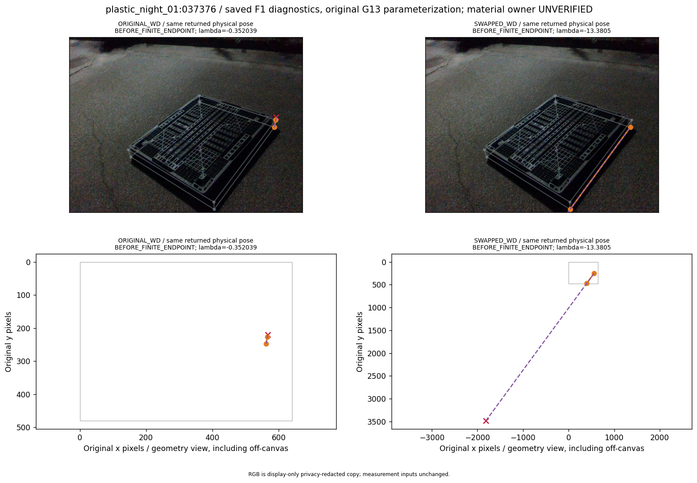
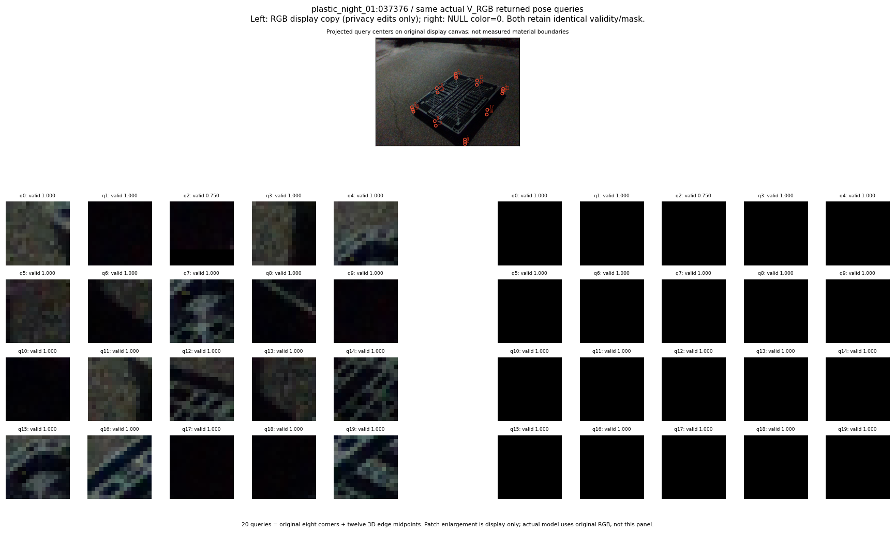

R_CONT_F0_s20261018:fixed_full_failure41_max_T_worsening
thumbnail detail support visual



실선은 반환 자세, 초록 점선은 고정 기하 참조입니다. S는 영상 관측이 아닙니다. 점수는 모델별 의미가 다르며 보정된 안전 확률이 아닙니다. 개인정보 처리는 표시 사본에만 적용했습니다.
| 방법·seed | 위치 / 회전 / 공동성공 | 실제 출처 | 선택 후보 | 각 모델 자체 점수 |
|---|---|---|---|---|
| N0 | 11.19 cm / 5.202 deg / failure | N0 | N/A | N/A |
| E0 | 30.66 cm / 3.416 deg / failure | E0 | N/A | N/A |
| E0_REGENERATED | 30.66 cm / 3.416 deg / failure | E0 | E0_REGENERATED | N/A |
| POSEFIX_SUBPIX_PF_ANCHOR | 10.55 cm / 5.718 deg / failure | OTHER | N/A | N/A |
| POSEFIX_SUBPIX_YOLO_ANCHOR | 10.55 cm / 5.718 deg / failure | OTHER | N/A | N/A |
| D1_H1_MLP_s20261018 | 30.66 cm / 3.416 deg / failure | E0 | E0_REGENERATED | -0.7794363498687744 |
| D1_H1_MLP_s20261019 | 30.66 cm / 3.416 deg / failure | E0 | E0_REGENERATED | -1.3096003532409668 |
| D1_H1_MLP_s20261020 | 30.66 cm / 3.416 deg / failure | E0 | E0_REGENERATED | -1.3089102506637573 |
| D1_H1_PAIR_MLP_s20261018 | 11.19 cm / 5.202 deg / failure | N0 | N0 | -1.7550686597824097 |
| D1_H1_PAIR_MLP_s20261019 | 11.19 cm / 5.202 deg / failure | N0 | N0 | -1.2512015104293823 |
| D1_H1_PAIR_MLP_s20261020 | 11.19 cm / 5.202 deg / failure | N0 | N0 | -1.0797322988510132 |
| D1_H1_PAIR_ROLE_AFFINE_s20261018 | 11.19 cm / 5.202 deg / failure | N0 | N0 | -0.7040659189224243 |
| D1_H1_PAIR_ROLE_AFFINE_s20261019 | 11.19 cm / 5.202 deg / failure | N0 | N0 | -0.6179378628730774 |
| D1_H1_PAIR_ROLE_AFFINE_s20261020 | 11.19 cm / 5.202 deg / failure | N0 | N0 | -0.7589066028594971 |
| R_CONT_F0_s20261018 | 30.66 cm / 3.416 deg / failure | E0 | E0_REGENERATED | 0.70600825548172 |
| R_CONT_F0_s20261019 | 30.66 cm / 3.416 deg / failure | E0 | E0_REGENERATED | 0.8707051873207092 |
| R_CONT_F0_s20261020 | 30.66 cm / 3.416 deg / failure | E0 | E0_REGENERATED | 1.0026060342788696 |
| R_ORDER_F0_s20261018 | 11.19 cm / 5.202 deg / failure | N0 | N0 | 1.6421972513198853 |
| R_ORDER_F0_s20261019 | 11.19 cm / 5.202 deg / failure | N0 | N0 | 2.729189872741699 |
| R_ORDER_F0_s20261020 | 11.19 cm / 5.202 deg / failure | N0 | N0 | -5.803616523742676 |
| R_ORDER_F1_ZERO_s20261018 | 11.19 cm / 5.202 deg / failure | N0 | N0 | 13.321871757507324 |
| R_ORDER_F1_ZERO_s20261019 | 11.19 cm / 5.202 deg / failure | N0 | N0 | 8.026443481445312 |
| R_ORDER_F1_ZERO_s20261020 | 11.19 cm / 5.202 deg / failure | N0 | N0 | 8.787954330444336 |
| R_ORDER_F1_s20261018 | 11.19 cm / 5.202 deg / failure | N0 | N0 | 5.090626239776611 |
| R_ORDER_F1_s20261019 | 30.66 cm / 3.416 deg / failure | E0 | E0_REGENERATED | 4.6850738525390625 |
| R_ORDER_F1_s20261020 | 11.19 cm / 5.202 deg / failure | N0 | N0 | -0.8765966296195984 |
| V_ORDER_NULL_s20261018 | 11.19 cm / 5.202 deg / failure | N0 | N0 | 2.113849401473999 |
| V_ORDER_NULL_s20261019 | 30.66 cm / 3.416 deg / failure | E0 | E0_REGENERATED | -0.022249139845371246 |
| V_ORDER_NULL_s20261020 | 11.19 cm / 5.202 deg / failure | N0 | N0 | 3.7428479194641113 |
| V_ORDER_RGB_s20261018 | 11.19 cm / 5.202 deg / failure | N0 | N0 | 4.380426406860352 |
| V_ORDER_RGB_s20261019 | 30.66 cm / 3.416 deg / failure | E0 | E0_REGENERATED | -0.5943946242332458 |
| V_ORDER_RGB_s20261020 | 28.95 cm / 83.18 deg / failure | OTHER | G10/SWAPPED_WD/selected | -10.569747924804688 |